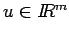
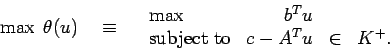

Midterm Exam, Fall 2004
Take Home
Due: Beginning of class, Thursday, 21 October 2004.
This is to be all your own work. You may use any result from class,
homeworks, or the books on reserve in the library.
Do not consult anybody or anything else.
I can dispense hints to help you if you are stuck.
You can reach me by email at mitchj@rpi.edu.
My office phone number is 276-6915.
The exam consists of five questions and is worth a total of 100 points.
I will have my usual office hours on Tuesday from 2-5pm.
- 1.
- (30 points.)
Let (NLP) denote the nonlinear programming problem
- (a)
- (4 points) Show the feasible region to (NLP) is convex and the objective
function is concave.
Show that constraint qualification holds throughout the feasible region.
- (b)
- (8 points) Verify that x1=(8,12) and x2=(0,-20) satisfy the first order
Karush-Kuhn-Tucker necessary conditions.
- (c)
- (8 points) Use the second order KKT conditions to determine whether x1
and/or x2 are local minimizers.
- (d)
- (5 points) Are there any other KKT points for this problem?
- (e)
- (5 points) Can you find the global minimizer?
- 2.
- (20 points. Each part is worth 4 points.) Consider the problem
where
,
,
m<n
and A has rank m.
- (a)
- Give a geometrical interpretation for this problem.
- (b)
- Prove that the matrix AAT is invertible.
(Note: A square matrix B is invertible if and only if it is nonsingular
if and only if the only solution to Bx=0 is x=0.
You may use the fact that the null space and row space of a matrix
are orthogonal.)
- (c)
- Verify that
is a
Karush-Kuhn-Tucker point for this problem.
- (d)
- Hence show that
is the global optimum solution.
- (e)
- Show that the optimal value is zero if and only if
Ac=0.
- 3.
- (20 points.)
Let
be a convex cone.
Let K+ be the dual cone to K, so
The optimization problem
has Lagrangian dual function
where
,
,
and A is an
m x n matrix.
The Lagrangian dual problem is to maximize
over
.
- (a)
- (10 points)
Show that the Lagrangian dual problem can be written

- (b)
- (10 points)
Let K be the set of 2 x 2 symmetric positive semidefinite real matrices.
This convex cone is self dual, so K+=K.
The primal problem is
Show that the dual problem does not have an optimal solution, that is, the maximum
value in the Lagrangian dual is not achieved by any v.
- 4.
- (15 points)
Let
be the position of an object at time t.
The position satisfies the recurrence relation
where A is an n x n matrix,
,
and u(t) is a scalar.
The initial position is x(0)=0.
It is desired to control the movement of the object so that its final position is
.
The controls u(t) are chosen so as to minimize the total amount of fuel
consumed. The fuel consumed at time t is
Formulate the problem of finding the set of controls u(t) to mimimize the total fuel
consumption subject to reaching the desired final position
as a linear programming problem.
- 5.
- (15 points.)
The convex optimization problem
has Lagrangian function
L(x,u)=x12 + 4 x22 + 6x32
+u1(3(x1-4)2 + 4(x2+2)2 + (x3-5)2-40)+u2(2-x1),
Lagrangian dual function
,
and
Lagrangian dual problem
Let
be a solution to the subproblem, so
.
We saw in class that
is a subgradient to the concave function
at
so
Given points
,
we can approximate the dual problem by
the linear program
Kelley's cutting plane approach to solving the dual problem is to solve (DAp)
for the current set of p vectors ui, use the optimal solution to give up+1,
and iterate.
This method is discussed on pages 224-227 of the text.
Set u1=(1,1). Solve (DA1) and (DA2).
What are the final upper and lower bounds you obtain on the optimal value of (LD)?
John E. Mitchell
2004-10-14